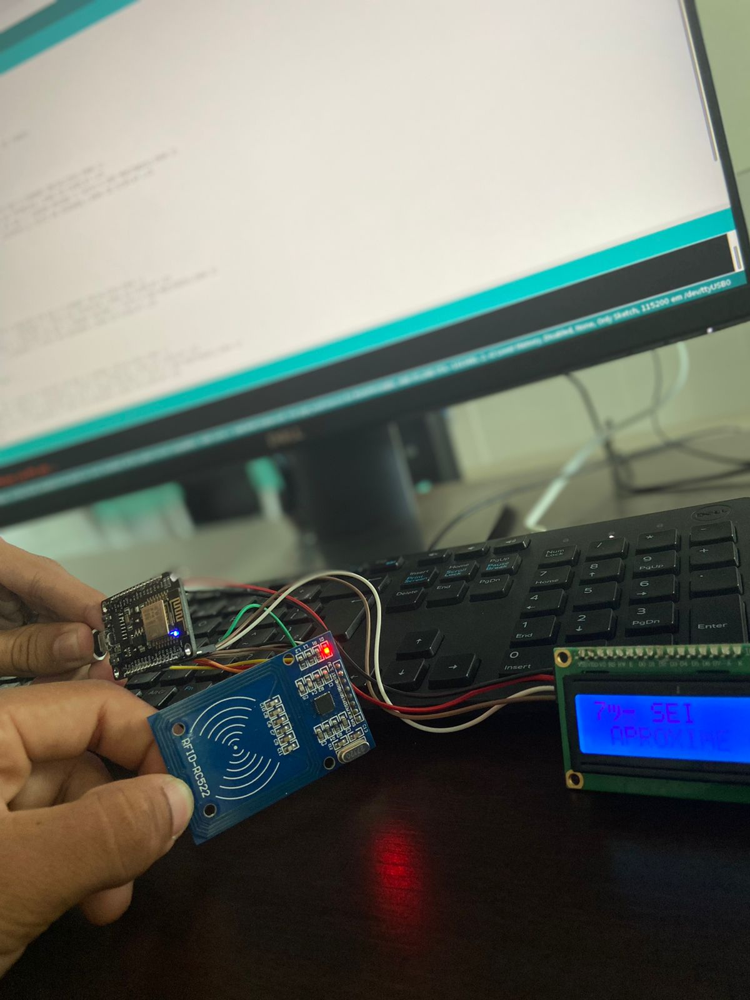
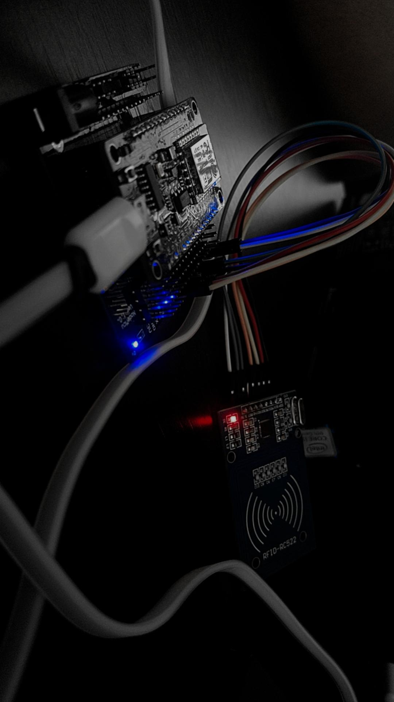
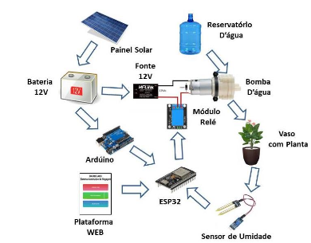

Gabriel Sales
[ Fullstack Software & Embedded Systems Engineer ]
Full-stack developer focused on the intersection of high-performance software and embedded systems. With a solid academic foundation from the Federal University of Paraíba and hands-on IoT experience from the Federal Institute of Paraíba, I specialize in building systems that bridge Java/Spring Boot applications with embedded platforms like ESP32/ESP8266, PX4 Autopilot (pixhawk), and Arduino. Dedicated to scalable architectures, I apply SOLID principles and design patterns to develop robust solutions aligned with Industry 4.0.
01. Featured Projects
SIDIPE - IoT Emergency Response
A mission-critical IoT system designed to streamline emergency medical care. Using RFID tags to store unique patient IDs, the system allows first responders to instantly retrieve vital medical records and pre-existing conditions by simply scanning a patient’s tag with a custom-built reader. This high-speed data retrieval is crucial for making life-saving decisions in seconds.
Stacks: ESP8266, RFID (MFRC522), RESTful API (Flask/Python), PostgreSQL, and JSON Data Management.


Smart Farming & Autonomous Irrigation
This scientific research project, presented at V SIMPIF, focuses on developing a precision agriculture system for automated monitoring and irrigation. The core objective is efficient water resource management through a closed-loop control system that integrates real-time telemetry and sustainable automation.
Stacks: ESP32, Arduino, C++, Sensors (YL-69), 12V Actuators, Solar Power (Photovoltaic), and Web Dashboard


Autonomous Navigation System - Pixhawk & PX4
This project focuses on the development of an autonomous electric vehicle (USV - Unmanned Surface Vehicle) capable of self-navigation. The system is built on the Pixhawk flight controller running the PX4 Autopilot stack over the NuttX RTOS, managing complex tasks like stabilization, mission planning, and real-time sensor fusion.
The architecture integrates internal IMU sensors (accelerometer, gyroscope, magnetometer) with an external GPS module for high-precision positioning. The power management system uses a dedicated power module to distribute energy to the controller and the ESCs, which convert PWM signals into propulsion for the motors
.jpeg)

IrrigaTech - Startup NE Program
IrrigaTech is an innovative smart irrigation startup focused on urban farming and sustainable cultivation. Selected as one of the top 80 most promising projects in the Startup NE program, the system combines IoT automation with a robust backend to make plant care accessible, efficient, and water-conscious.
The project evolved through intensive business validation and professional mentoring, transitioning from a prototype to a scalable market solution. The technical architecture was designed to handle secure device registration and real-time data management, ensuring a professional-grade integration between field hardware and cloud services.
Stacks: ESP8266, Java & Spring Boot, RESTful API, MVC Architecture, MySQL, and HTTPS Protocol.
02. System Overview
I specialize in developing robust web applications and high-impact electronic solutions. Driven by the Deep Work philosophy, I strive for technical excellence in every line of code—whether I'm architecting Java backends or engineering precision firmware for microcontrollers.
03. Capabilities & Stack
[Software_Engine]
- Java / Spring Boot
- Javalin (Lightweight API)
- SOLID Principles
- Design Patterns
- RESTful Architecture
[Hardware_Layer]
- C++ / Arduino
- ESP8266 & ESP32
- Pixhawk (PX4 Autopilot)
- IoT Protocols (MQTT/HTTP)
- Sensor Integration
[Ops_Environment]
- Linux (Terminal Expert)
- Docker Containers
- Git / GitHub
- MVC Architecture
- SQL Databases
04. Contact Protocol
Interested in collaborations or new technical challenges? Let's connect.